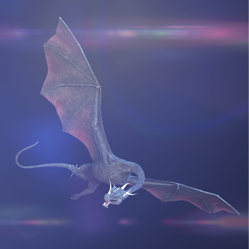

Coding Projects
GitHub Account BrandonDaws
Run Buddy

Run Buddy is a website designed to connect people with trainers based on location. it is still a work in progress, so please stay tuned! Take a look at the Github Page to see!
The Huntsmen
.png)
The Huntsmen is an app designed for anyone who has a love for the great outdoors! Wether you are looking for your next camping or hunting adventure or are looking for like minded people who share your passion for the outdoors, The Huntsmen is the place for you! create an account to create and view posts from your fellow outdoorsman, as well as use our built in tool to allow you to find state parks in every state with a link to their website for important information about campgrounds and activities! To view it on GitHub click here!, or to view the deployed app on Heroku you can go here!
Mini Factory
Minin Factory was a group project centered around table top adventure minis. Users will create an account and be able to post and sell mini's as well browse others.